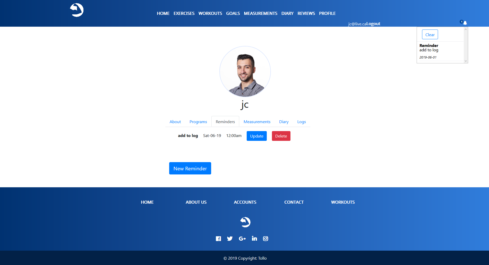
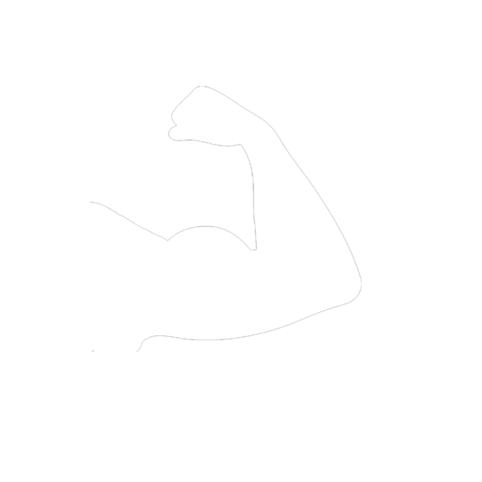
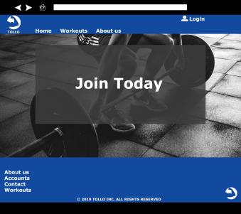
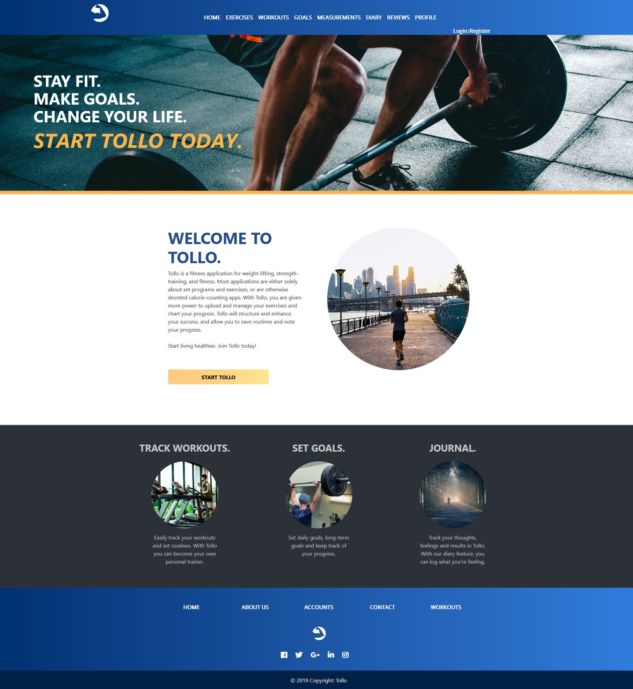

Tollo
Tollo is a personalized fitness application that assists people through their healthy journey. Users can create a profile, input their measurements, set goals, create workout plans, set reminders, and more. Tollo is designed to help members succeed in leading a healthy lifestyle and achieving their fitness goals.
This application was developed on a team of four people. Each team member is a full stack developer and created 3 data-driven features. Aside from that, we each chose areas of focus to fulfill a well-rounded application. Justin and Beverly took the lead on the front-end and design of the application. Jing and Delan focused on the back-end and server-side aspects of the application including database structure, accounts, and hosting. We all had areas of focus that we took ownership for, however, the project was a large collaboration in every aspect.
Features and Roles
I was responsible for designing the application including the logo, colours, and mock-ups. On top of that, I created 3 data-driven features. These features include reminders, notifications, and the about section in the profile view. I took ownership of the profile page, as well as I designed the entire application with Beverly.
The reminders feature is located in the profile page and allows a user to create, edit, view, and delete reminders. Notifications and reminders work together, as when the date and time of a reminder is set, it sends the message to the notifications table. I used an ajax call to check the notifications table on an interval to see if any new notifications were added. When there is a new notification to display, it updates the number badge located in the header. A user can then check notifications by clicking the icon in the header to access a dropdown menu. Last, notifications are deleted once the user clicks the clear button.
In the profile view, the first tab is the About section. It is designed so that when the user fills out information about themselves including their name, gender, age, and bio, they can only update it afterwards. This prevents the user from creating multiple about rows in the database, as when they update this section, it will update the only row that has their information by finding the foreign key, user ID.
Design Process
 The design process started with wireframes that were initially hand-drawn. We then took the structure of the wireframes and brought the design to life in Adobe Photoshop. Finally, the mock-up was coded with HTML and CSS. The styling of the website is a mixture of Bootstrap and custom CSS. Last, the logo was done in photoshop, taking a silhouette of a flexing arm into a white circular background. The objective of the logo was to match the branding of a fitness-based audience, as well as it stands out as a universal symbol for strength.
First Draft
Evolution
Challenges
The main challenge we faced in this project was the organization of code when multiple people were working on the same file. Structurally, we followed MVC (Model View Controller) and established the file structure early on to keep everything in order. However, order was difficult to maintain in global styling sheets, and the notifications controllers because there were at least 2 contributors in those files. The notifications controller brought together objects from both the reminders and goals features, and goals was not one of my features.
We overcame these challenges by going over the code together and communicating. We agreed on a structure that was readable, as well as it organized the code in a logical manner. We used comments to divide sections and explain exactly what each function was doing. We achieved a well organized controller that brought together three classes with comments and a naming convention.
Learning Outcomes
Out of all the projects I have done so far, I learned the most from Tollo. In a group project that combines all the aspects of a data-driven application, communication is key. This means telling your group what you are working on, when you plan on completing the MVP, and when you are going to push to the repository. Repository communications and maintenance is critical in a group project. For instance, if you don’t communicate and comment all of your commits, it gets really hectic and you are risking losing work. It is important that everyone pushes regularly whenever they reach a small milestone, and everyone pulls to ensure they are working on the most up to date version of the project. When there is a merge conflict, it is important to communicate with your team and ensure you do not overwrite another member's work.
VISIT